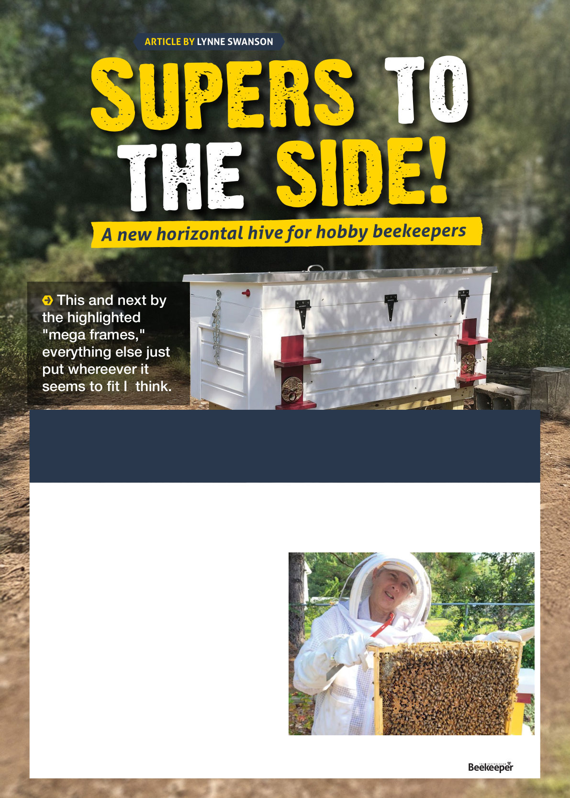

ARTICLE BY LYNNE SWANSON
This and next by
the highlighted
"mega frames,"
everything else just
put whereever it
seems to fi t I think.
A new horizontal hive for hobby beekeepers
Hobby beekeepers have lots of options when it comes to choosing hive
configuration. When I looked into getting my first hives, I looked at the pluses and
minuses of five different options from two different perspectives. First, from that
of a 163cm, middle-aged woman (me), and second, from the bees themselves.
Full disclosure: my background is that of a retired veteri-
narian with an interest in animal behavior, so I know the stress
that can ensue unnecessarily when our approach to different
species reflects only human culture and not that of an animal
(or, in this case, an insect).
The classes I attended through my local association empha-
sized the use of vertical Langstroth hives in eight- and ten-
frame boxes. This reflects many years of tradition and this
hive’s adaptability to commercial beekeeping situations. But
Langstroth boxes necessitate heavy lifting that I need to avoid
due to back and strength issues. Also, I am never going to be
a commercial beekeeper.
Five-frame nucleus hives cut the weight of these boxes down,
but colonies in these hives build up fast, with less room for
expansion. I found their strength was in being used as emer-
gency hives and swarm traps.
Because I love the idea of having everything I need at a rea-
sonable working height - as opposed to leaning over to pick
things up - I was intrigued by the idea of horizontal hives. But
what kind of horizontal hive to use?
I ruled out using top bar hives because I wanted full frames
for honey harvesting.
I liked the idea of Long Langs, but their depth of only one
deep frame is quite limiting when bees are storing winter
resources. I’ve since built two long Langs, but I use them pri-
marily for spring nuc propagation.
• One deep + one medium = the mega-frame!
Vol. 127 | No. 4 |
| 13